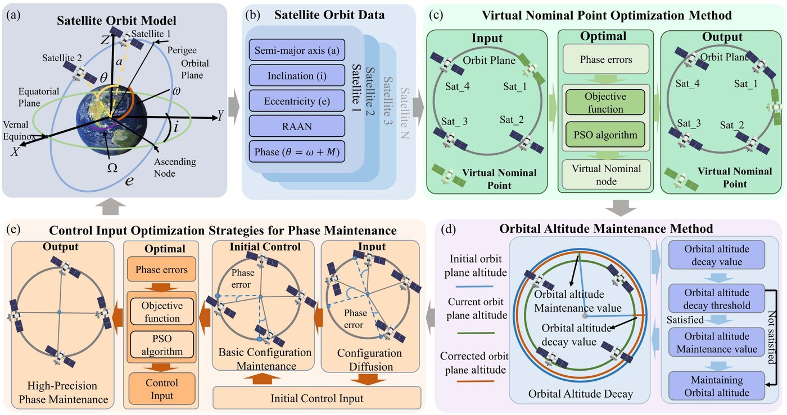
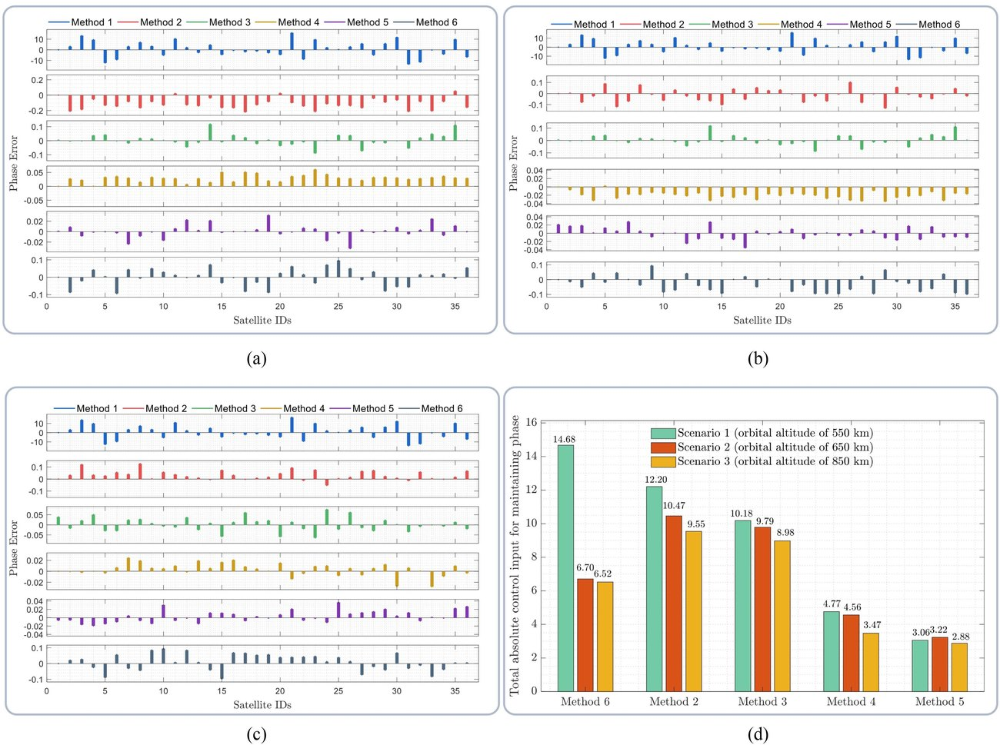
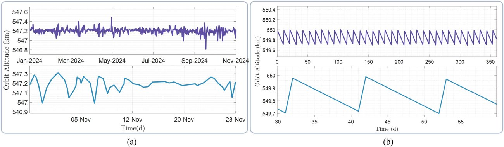

课题组论文发表于 IEEE TAES：基于共相位与控制优化的多星构型维持
尹天乐同学作为第一作者的研究成果 Configuration Maintenance in Multisatellite Orbits Via Co-Phase and Control Optimization 发表于 IEEE Transactions on Aerospace and Electronic Systems（2025, 61(6): 16738–16750）。论文提出一个双目标优化框架，分别优化虚拟标称点与控制输入：每个控制周期系统性地调整全部卫星的期望位置，在保证所有卫星进入站位保持区的同时最小化总能耗，并把星间相位误差显式纳入控制输入优化，兼顾长期轨道高度稳定性。

问题：J2 与大气阻力让同轨卫星慢慢散开
同一轨道面内松耦合的多星系统，其构型主要依赖相对相位来维持。轨道高度偏差与摄动（地球 J2 项、大气阻力）会引起相位漂移与半长轴变化，长期累积导致构型逐渐弥散，直接影响地面覆盖与观测精度。轨道高度越低，摄动影响越显著。传统做法多为固定标称点、再单独求解控制量，两者分离处理，难以在每个控制周期内同时兼顾「不偏离站位保持区」与「少耗燃料」。
方法：标称点与控制量分开优化，但相互衔接
- 虚拟标称点优化：以各星相位误差构成目标函数，用 PSO 系统性地调整全部卫星的期望位置，使相对偏差在每个控制周期内最小，而不是沿用固定标称点。
- 控制输入优化：在保证所有卫星回到各自站位保持区的前提下最小化总能量消耗，并把星间相位误差显式写入优化目标，避免「各自归位但相对相位仍错」。
- 长期高度维持：设置轨道高度衰减阈值，当高度低于维护值时触发抬升，兼顾长周期轨道高度稳定。
结果：三种轨道高度场景均验证有效
- 在 550 km、650 km、850 km 三种轨道高度场景下，方法均能维持多星构型，相位控制精度与总控制输入优于对比方法。
- 高度越低（摄动越强）优势越明显：550 km 场景下所需总控制输入约 6.70，对比方法为 14.68。
- 长周期仿真显示轨道高度在阈值附近稳定循环，未出现持续衰减或发散。

